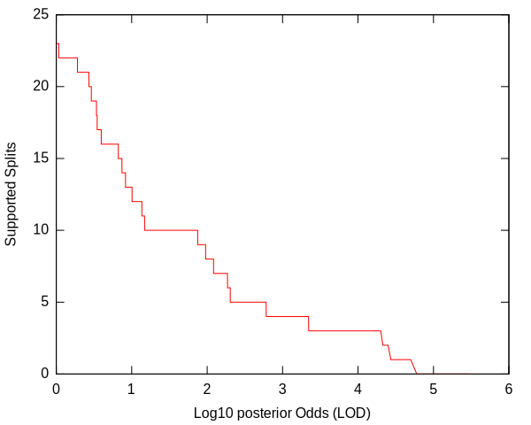
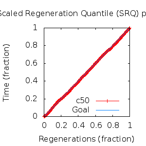
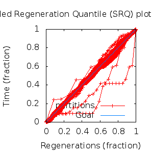

MCMC Post-hoc Analysis: 29 sequences
Data & Model
| Partition | Sequences | Lengths | Alphabet | Substitution Model | Indel Model | Scale Model |
|---|
| 1 |
E5_alpha1_alpha2_epsilonzeta_aa.fas |
71 - 96 |
Amino-Acids | S1 = lg08+f |
I1 = rs07 |
scale1 ~ gamma[0.5,2] |
Scalar variables
| Statistic | Median | 95% BCI | ACT | ESS | burnin | PSRF-CI80% | PSRF-RCF |
|---|
| prior |
-150.3 |
(-183.8, -120.2) |
31.59 |
8547 |
373
|
1 | 1.004
|
| prior_A1 |
-267.5 |
(-295, -246.6) |
12.88 |
20964 |
451
|
0.9997 | 1.004
|
| likelihood |
-3105 |
(-3126, -3085) |
16.65 |
16213 |
190
|
0.9999 | 1.003
|
| posterior |
-3255 |
(-3287, -3226) |
32.46 |
8318 |
489
|
1 | 1.001
|
| Heat.beta |
1 |
| | | | | |
| Scale[1] |
7.949 |
(5.521, 11.03) |
1.141 |
236600 |
100
|
0.9999 | 0.9999
|
| f:pi[A] |
0.0578 |
(0.04176, 0.07559) |
7.743 |
34870 |
338
|
1.001 | 0.9983
|
| f:pi[R] |
0.06337 |
(0.04355, 0.08586) |
8.029 |
33626 |
691
|
1 | 1.002
|
| f:pi[N] |
0.02515 |
(0.0133, 0.0388) |
7.467 |
36158 |
466
|
1 | 0.9964
|
| f:pi[D] |
0.01626 |
(0.005118, 0.03104) |
8.256 |
32703 |
900
|
1 | 0.9961
|
| f:pi[C] |
0.05741 |
(0.04121, 0.07546) |
7.683 |
35143 |
239
|
0.9999 | 0.9938
|
| f:pi[Q] |
0.03936 |
(0.02499, 0.05561) |
8.479 |
31843 |
721
|
1 | 1.003
|
| f:pi[E] |
0.01537 |
(0.005146, 0.02862) |
8.149 |
33133 |
310
|
0.9997 | 0.9957
|
| f:pi[G] |
0.03448 |
(0.01822, 0.05372) |
7.698 |
35072 |
522
|
0.9998 | 1.001
|
| f:pi[H] |
0.02911 |
(0.01729, 0.04295) |
7.612 |
35470 |
618
|
1 | 1.001
|
| f:pi[I] |
0.05642 |
(0.04328, 0.07011) |
8.704 |
31021 |
643
|
1 | 1.006
|
| f:pi[L] |
0.1811 |
(0.1534, 0.2097) |
7.684 |
35137 |
531
|
0.9999 | 1.001
|
| f:pi[K] |
0.02467 |
(0.01258, 0.039) |
8.841 |
30539 |
484
|
1 | 0.9973
|
| f:pi[M] |
0.01951 |
(0.0125, 0.02739) |
7.759 |
34798 |
749
|
1 | 0.9997
|
| f:pi[F] |
0.0752 |
(0.0577, 0.09455) |
8.032 |
33617 |
393
|
1 | 1.007
|
| f:pi[P] |
0.03674 |
(0.01961, 0.05743) |
8.015 |
33685 |
467
|
0.9998 | 1.005
|
| f:pi[S] |
0.06212 |
(0.04507, 0.08073) |
7.859 |
34357 |
607
|
1 | 0.9984
|
| f:pi[T] |
0.05653 |
(0.04073, 0.07331) |
7.91 |
34132 |
299
|
1 | 0.9968
|
| f:pi[W] |
0.01889 |
(0.009356, 0.03056) |
7.773 |
34735 |
480
|
0.9998 | 1.002
|
| f:pi[Y] |
0.0286 |
(0.01839, 0.04013) |
8.146 |
33144 |
393
|
0.9998 | 1.002
|
| f:pi[V] |
0.09199 |
(0.07379, 0.111) |
8.862 |
30467 |
328
|
0.9994 | 0.9979
|
| rs07:mean_length |
5.71 |
(3.936, 8.018) |
2.388 |
113054 |
102
|
0.9998 | 0.9999
|
| rs07:log_rate |
-3.829 |
(-4.2, -3.441) |
2.594 |
104078 |
141
|
0.9999 | 0.9996
|
| |A1| |
175 |
(170, 182) |
22.3 |
12105 |
98 |
0.8889 | 0.9975
|
| #indels1 |
31 |
(28, 35) |
17.17 |
15721 |
361 |
0.8571 | 1.004
|
| |indels1| |
158 |
(148, 172) |
8.549 |
31583 |
133 |
0.9375 | 1.001
|
| #substs1 |
555 |
(544, 564) |
17.1 |
15793 |
274 |
0.9231 | 1.002
|
| Scale1*|T| |
8.873 |
(7.989, 9.774) |
3.757 |
71867 |
160
|
0.9999 | 1.001
|
| |A| |
175 |
(170, 182) |
22.3 |
12105 |
98 |
0.8889 | 0.9975
|
| #indels |
31 |
(28, 35) |
17.17 |
15721 |
361 |
0.8571 | 1.004
|
| |indels| |
158 |
(148, 172) |
8.549 |
31583 |
133 |
0.9375 | 1.001
|
| #substs |
555 |
(544, 564) |
17.1 |
15793 |
274 |
0.9231 | 1.002
|
| |T| |
1.117 |
(0.7692, 1.509) |
1 |
270003 |
88
|
1 | 1
|
Phylogeny Distribution


Alignment Distribution
Partition 1
|
|
|
Diff |
|
Min. %identity |
# Sites |
Constant |
Informative |
| Initial |
FASTA |
HTML |
Diff |
|
2.3% |
96 |
1 (1.04%) |
92 (95.8%) |
| Best (WPD) |
FASTA |
HTML |
|
AU |
3.79% |
174 |
2 (1.15%) |
140 (80.5%) |
Mixing
Statistics: | scalar burnin | 900 | | scalar ESS | 8318 | | topological ESS | | | ASDSF | NA | | MSDSF | NA | | PSRF CI80% | 1.001 | | PSRF RCF | 1.007 |
|  |
Analysis
directory: /work/awillemsen/bali-phy/AlphaPVs_E5_aa_new
version: 3.3
| chain # | burnin | subsample | Iterations (after burnin) | command line | subdirectory |
|---|
| 1 |
10000 |
1 |
90000 |
bali-phy E5_alpha1_alpha2_epsilonzeta_aa.fas -s 52346 -i 100000 -n AlphaPVs_E5_alpha1_alpha2_epsilonzeta |
AlphaPVs_E5_alpha1_alpha2_epsilonzeta-1 |
| 2 |
10000 |
1 |
90000 |
bali-phy E5_alpha1_alpha2_epsilonzeta_aa.fas -s 82343 -i 100000 -n AlphaPVs_E5_alpha1_alpha2_epsilonzeta |
AlphaPVs_E5_alpha1_alpha2_epsilonzeta-2 |
| 3 |
10000 |
1 |
90000 |
bali-phy E5_alpha1_alpha2_epsilonzeta_aa.fas -s 23949 -i 100000 -n AlphaPVs_E5_alpha1_alpha2_epsilonzeta |
AlphaPVs_E5_alpha1_alpha2_epsilonzeta-3 |
| P(data|M) = -3126.279 +- 0.254
|
Complete sample: 81422
topologies |
95% Bayesian credible interval: 67078 topologies |
Model and priors
Tree (+priors)
| topology | ~ uniform on tree topologies |
| branch lengths | ~ iid[num_branches[T],gamma[0.5,div[2,num_branches[T]]]] |
Substitution model (+priors)
| S1 | = |
lg08+f
| f:pi | ~ | dirichlet_on[letters[@a],1]
|
|
Indel model (+priors)
| I1 | = |
rs07
| rs07:log_rate | ~ | laplace[-4,0.707]
|
| rs07:mean_length | ~ | exponential[10,1]
|
|
Scales (+priors)
{kind=link}
{kind=link}
{kind=link}
{kind=link}
{kind=link}
{kind=link}
{kind=link}
{kind=link}